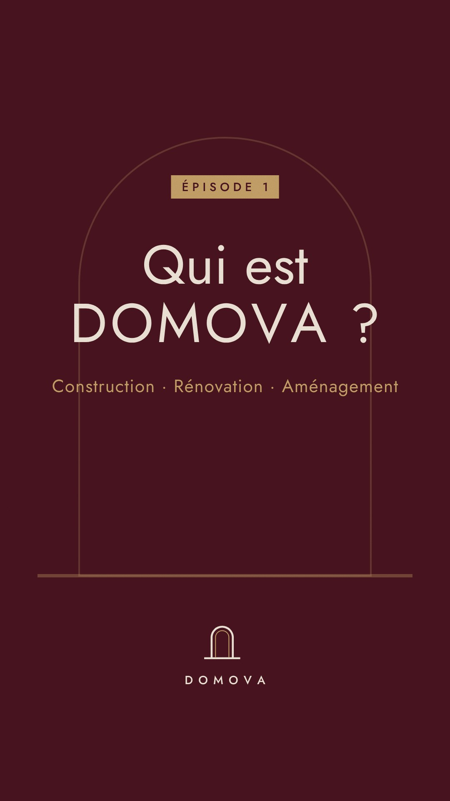
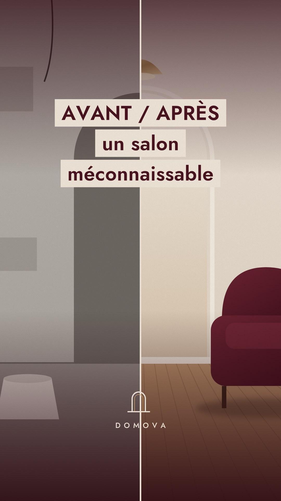
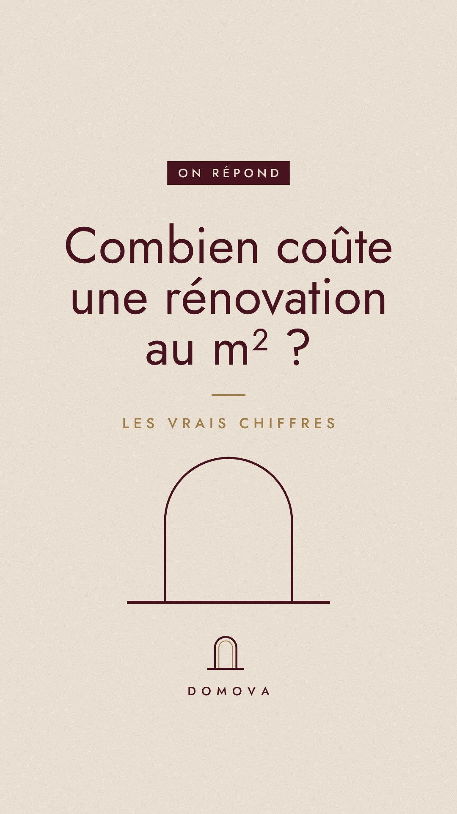
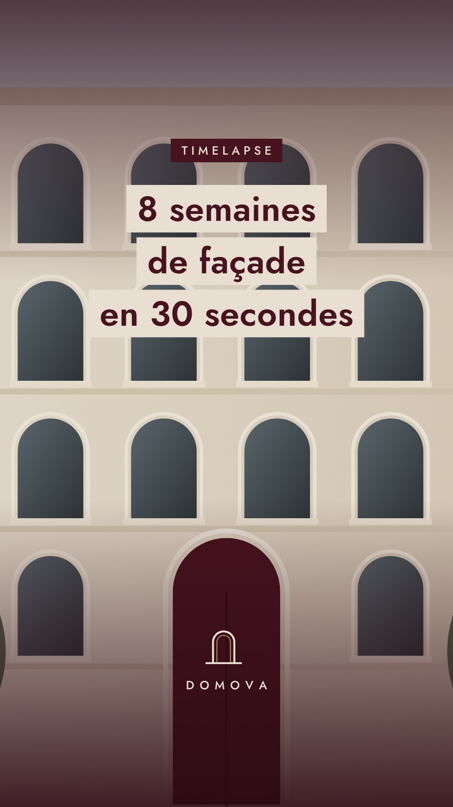
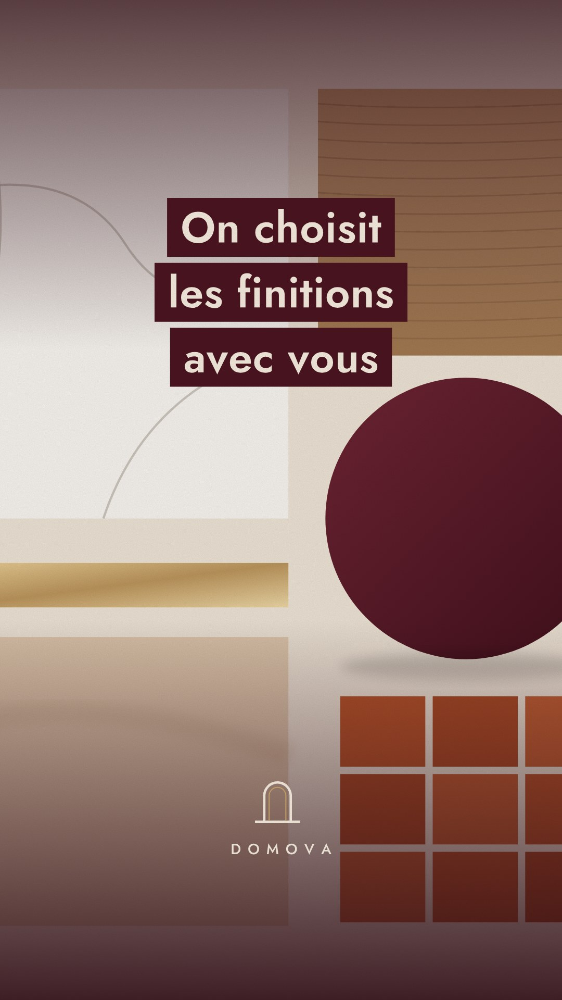
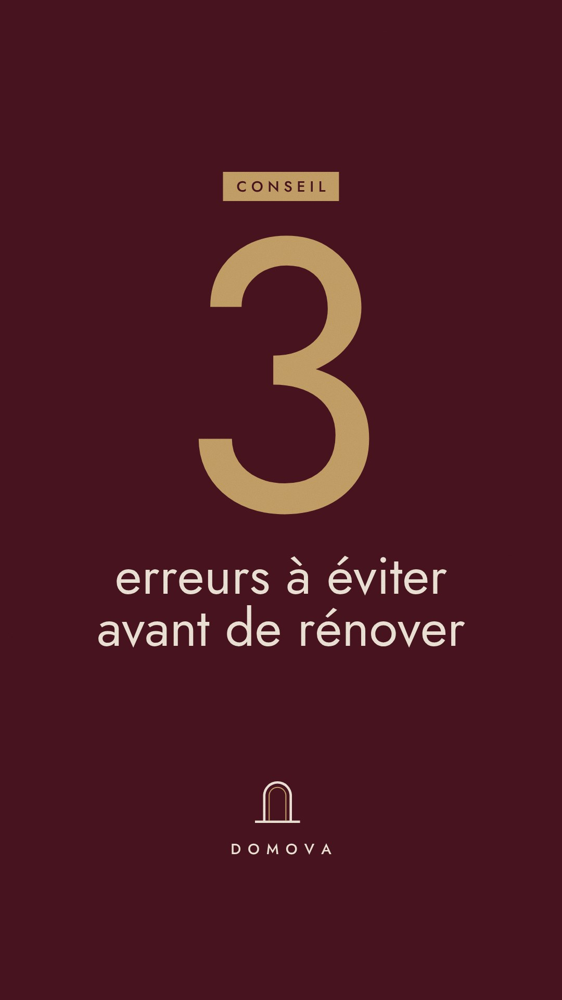
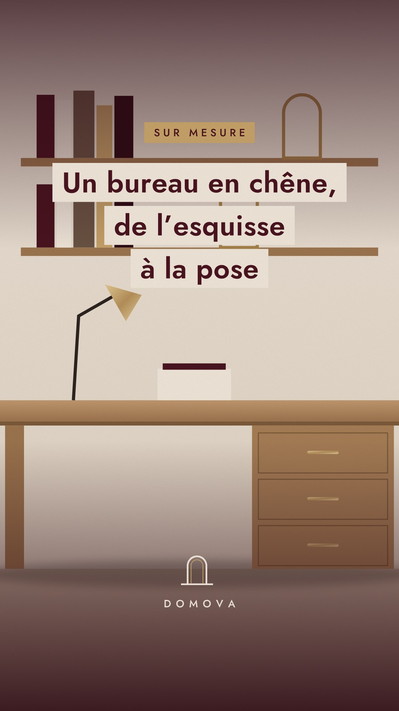
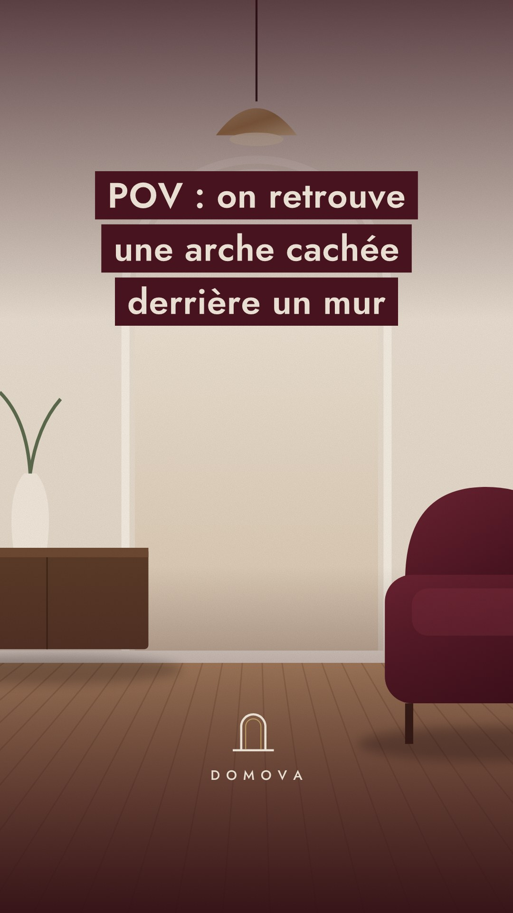
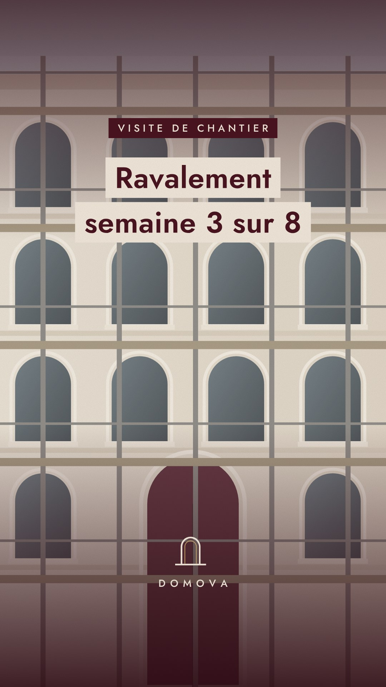

<title>DOMOVA TikTok</title>
<meta name="claude:viewport-fit-sides" content="cover">
<link rel="stylesheet" href="https://fonts.googleapis.com/css2?family=Jost:wght@400;500;600&family=JetBrains+Mono:wght@400&display=swap">
<style>
/* Layout: phone profile beside the strategy, then covers, video formats, bios, captions, rhythm */
:root{--bx:#4A1420;--bxp:#2E0B14;--cr:#F3E9DC;--ch:#C9A46A;--chf:#A8834A;--ink:#24161A;--muted:#7A645E;--line:rgba(74,20,32,.14);
--f:"Jost","Futura","Century Gothic",system-ui,sans-serif;--m:"JetBrains Mono",ui-monospace,Menlo,monospace;color-scheme:light}
*{box-sizing:border-box}
body{margin:0;background:var(--cr);color:var(--ink);font-family:var(--f);font-size:17px;line-height:1.6}
.band{padding-left:max(16px,env(safe-area-inset-left,0px));padding-right:max(16px,env(safe-area-inset-right,0px));padding-block:clamp(48px,8vw,104px)}
.dark{background:var(--bx);color:var(--cr)}
.wrap{max-width:1200px;margin:0 auto;display:grid;gap:40px}
.eyebrow{font-family:var(--m);font-size:12px;letter-spacing:.2em;text-transform:uppercase;color:var(--chf)}
.dark .eyebrow{color:var(--ch)}
h1,h2,h3{margin:0;font-weight:500;line-height:1.12;text-wrap:balance}
h1{font-size:clamp(32px,5vw,56px)} h2{font-size:clamp(26px,3.6vw,40px)} h3{font-size:19px;font-weight:600}
p{margin:0;max-width:62ch}
.lede{font-size:19px;color:var(--muted)} .dark .lede{color:#E3CFC2}
.hero{display:grid;grid-template-columns:minmax(0,420px) minmax(0,1fr);gap:64px;align-items:start}
.phone{background:#151012;border-radius:48px;padding:12px;box-shadow:0 30px 60px rgba(46,11,20,.35);max-width:420px;width:100%}
.screen{background:#fff;border-radius:38px;overflow:hidden;color:#141414;font-size:13px;line-height:1.4;text-align:center}
.bar{display:flex;justify-content:space-between;padding:18px 20px 6px;font-weight:600;font-size:15px}
.av svg{width:96px;height:96px;display:block;margin:6px auto 8px;border-radius:50%}
.handle{font-weight:600;font-size:15px}
.stats{display:flex;justify-content:center;gap:26px;margin:12px 0}
.stats b{display:block;font-size:16px} .stats span{color:#777;font-size:12px}
.btns{display:flex;justify-content:center;gap:6px;margin:4px 0 10px}
.btns span{background:#F1F1F2;border-radius:6px;padding:8px 22px;font-weight:600}
.btns span:first-child{background:var(--bx);color:var(--cr);padding:8px 40px}
.bio{padding:0 28px 6px;font-size:13px}
.bio a{display:block;font-weight:600;color:#141414;margin-top:4px}
.tabs{display:flex;justify-content:space-around;border-bottom:1px solid #eee;padding:10px 0 8px;color:#999;font-size:12px;margin-top:8px}
.tabs span:first-child{color:#141414;border-bottom:2px solid #141414;padding-bottom:6px}
.grid{display:grid;grid-template-columns:repeat(3,1fr);gap:2px}
.cell{position:relative}
.cell img{width:100%;aspect-ratio:3/4;object-fit:cover;display:block}
.pin{position:absolute;top:6px;left:6px;background:#FE2C55;color:#fff;font-style:normal;font-size:10px;font-weight:600;padding:2px 6px;border-radius:3px}
.views{position:absolute;left:6px;bottom:5px;color:#fff;font-size:11px;font-weight:600;text-shadow:0 1px 3px rgba(0,0,0,.6)}
.strat{display:grid;gap:26px}
.pillars{display:grid;grid-template-columns:repeat(2,minmax(0,1fr));gap:2px;background:var(--line)}
.pillars div{background:var(--cr);padding:20px;display:grid;gap:6px}
.pillars b{font-family:var(--m);font-size:12px;letter-spacing:.14em;color:var(--chf);text-transform:uppercase;font-weight:400}
.covers{display:grid;grid-template-columns:repeat(3,minmax(0,1fr));gap:28px}
.covers figure{margin:0;display:grid;gap:12px;align-content:start}
.covers img{width:100%;display:block;border-radius:14px;box-shadow:0 12px 30px rgba(0,0,0,.3)}
.covers figcaption{font-size:14.5px;color:#E3CFC2;display:grid;gap:4px}
.covers b{color:var(--cr);font-weight:500;font-size:16px}
.fmt{font-family:var(--m);font-size:11.5px;letter-spacing:.1em;text-transform:uppercase;color:var(--ch)}
.rules{display:grid;grid-template-columns:repeat(3,minmax(0,1fr));gap:32px}
.rule{display:grid;gap:10px;align-content:start;padding-top:18px;border-top:2px solid var(--bx)}
.rule ul{margin:0;padding-left:18px;color:var(--muted)}
.bios{display:grid;grid-template-columns:repeat(3,minmax(0,1fr));gap:24px}
.bio-card{background:#fff;border:1px solid var(--line);padding:22px;display:grid;gap:12px;align-content:start}
.bio-text{font-size:16px;line-height:1.5}
.tag{font-family:var(--m);font-size:11px;letter-spacing:.14em;text-transform:uppercase;color:var(--chf)}
.count{font-family:var(--m);font-size:12px;color:var(--muted)}
.caps{display:grid;grid-template-columns:repeat(3,minmax(0,1fr));gap:24px}
.cap{background:#fff;color:var(--ink);padding:22px;display:grid;gap:10px;align-content:start;border:1px solid var(--line);font-size:15px;white-space:pre-line}
.week{width:100%;border-collapse:collapse;font-size:15px;min-width:640px}
.week th,.week td{text-align:left;padding:14px 12px;border-bottom:1px solid var(--line);vertical-align:top}
.week th{font-family:var(--m);font-size:12px;letter-spacing:.14em;text-transform:uppercase;color:var(--chf);font-weight:400}
.scroll{overflow-x:auto} .note{font-size:14px;color:var(--muted)}
@media (max-width:900px){.hero{grid-template-columns:minmax(0,1fr)}.phone{margin:0 auto}.covers{grid-template-columns:repeat(2,minmax(0,1fr))}.rules,.bios,.caps{grid-template-columns:minmax(0,1fr)}}
</style>

<section class="band"><div class="wrap"><div class="hero">
 <div class="phone"><div class="screen">
  <div class="bar"><span>＋</span><span>DOMOVA ▾</span><span>☰</span></div>
  <div class="av"><svg xmlns="http://www.w3.org/2000/svg" viewBox="-0.000 -0.000 1000.000 1000.000" role="img"><title>DOMOVA — logo rond réseaux sociaux (cercle-symbole-bordeaux)</title><circle cx="500.0" cy="500.0" r="500.0" fill="#4A1420"/><circle cx="500.0" cy="500.0" r="450.00" fill="none" stroke="#C9A46A" stroke-width="4.00"/><path fill="#F3E9DC" d="M354.335 445.665L354.335 695.723L272.763 695.723L272.763 720L727.237 720L727.237 695.723L645.665 695.723L645.665 445.665A145.665 145.665 0 0 0 500 300A145.665 145.665 0 0 0 354.335 445.665ZM378.613 445.665A121.387 121.387 0 0 1 500 324.277A121.387 121.387 0 0 1 621.387 445.665L621.387 695.723L378.613 695.723L378.613 445.665Z"/><path fill="#C9A46A" d="M410.173 445.665L410.173 695.723L421.098 695.723L421.098 445.665A78.902 78.902 0 0 1 500 366.763A78.902 78.902 0 0 1 578.902 445.665L578.902 695.723L589.827 695.723L589.827 445.665A89.827 89.827 0 0 0 500 355.838A89.827 89.827 0 0 0 410.173 445.665Z"/><path fill="#F3E9DC"  transform="translate(444.414 605.313)" d="M11.686473988439305 -104.87861271676299V0.0H45.54728323699421Q61.578728323699416 0.0 73.71468208092485 -6.517456647398843Q85.85063583815028 -13.034913294797686 92.66774566473987 -24.796300578034682Q99.48485549132947 -36.557687861271674 99.48485549132947 -52.4393063583815Q99.48485549132947 -68.32092485549133 92.66774566473987 -80.08231213872833Q85.85063583815028 -91.84369942196531 73.71468208092485 -98.36115606936414Q61.578728323699416 -104.87861271676299 45.54728323699421 -104.87861271676299ZM29.815491329479766 -16.630751445086702V-88.24786127167629H45.097803468208085Q52.88878612716762 -88.24786127167629 59.481156069364154 -86.00046242774565Q66.07352601156069 -83.75306358381502 70.9428901734104 -79.25826589595374Q75.8122543352601 -74.76346820809248 78.58404624277455 -68.02127167630057Q81.355838150289 -61.27907514450866 81.355838150289 -52.439306358381494Q81.355838150289 -43.59953757225433 78.58404624277455 -36.85734104046242Q75.8122543352601 -30.115144508670518 70.9428901734104 -25.695260115606935Q66.07352601156069 -21.275375722543348 59.481156069364154 -18.953063583815023Q52.88878612716762 -16.630751445086702 45.097803468208085 -16.630751445086702Z"/></svg>
</div>
  <div class="handle">@domova.btp</div>
  <div class="stats"><div><b>48</b><span>Abonnements</span></div><div><b>2 310</b><span>Abonnés</span></div><div><b>24,9 k</b><span>J’aime</span></div></div>
  <div class="btns"><span>Suivre</span><span>Message</span></div>
  <div class="bio">Les coulisses de nos chantiers 🏛<br>Rénovation · Construction · Aménagement<a>domova.fr</a></div>
  <div class="tabs"><span>Vidéos</span><span>Repost</span><span>Favoris</span></div>
  <div class="grid"><div class="cell"><em class="pin">Épinglé</em><span class="views">▷ 8,1 k</span></div><div class="cell"><em class="pin">Épinglé</em><span class="views">▷ 41,2 k</span></div><div class="cell"><em class="pin">Épinglé</em><span class="views">▷ 19,7 k</span></div><div class="cell"><span class="views">▷ 15,8 k</span></div><div class="cell"><span class="views">▷ 4,2 k</span></div><div class="cell"><span class="views">▷ 11,3 k</span></div><div class="cell"><span class="views">▷ 6,9 k</span></div><div class="cell"><span class="views">▷ 27,5 k</span></div><div class="cell"><span class="views">▷ 3,4 k</span></div></div>
 </div></div>
 <div class="strat">
  <span class="eyebrow">DOMOVA · Direction artistique TikTok</span>
  <h1>Les coulisses d’une maison d’architecture</h1>
  <p class="lede">Instagram montre le résultat ; TikTok montre comment on y arrive. Des vidéos verticales courtes, filmées sur le chantier, avec des couvertures à la même charte pour que le profil reste haut de gamme.</p>
  <div class="pillars">
   <div><b>Transformer</b><span>Avant / après et timelapses : le format qui fait le plus de vues.</span></div>
   <div><b>Montrer</b><span>Visites de chantier, gestes d’artisans, détails de finition.</span></div>
   <div><b>Expliquer</b><span>Prix, étapes, erreurs à éviter : face caméra, 30 à 60 s.</span></div>
   <div><b>Incarner</b><span>L’équipe, le gérant, les coulisses. On suit des personnes, pas un logo.</span></div>
  </div>
  <p class="note">Épinglez trois vidéos en haut du profil : la présentation, l’avant/après le plus fort et la vidéo sur les prix. Nombres de vues, ville et projets : exemples.</p>
 </div>
</div></div></section>

<section class="band dark"><div class="wrap">
 <div><span class="eyebrow">Les 9 premières vidéos</span><h2>Couvertures et idées de tournage</h2></div>
 <p class="lede">Couvertures 1080 × 1920 px. Le titre est placé dans le tiers haut, au centre : il reste visible dans la grille (recadrage 3:4) et hors des boutons TikTok à droite et en bas.</p>
 <div class="covers"><figure><figcaption><b>01 · Qui est DOMOVA ?</b><span class="fmt">Face caméra · 30 s</span>Le gérant se présente sur un chantier : qui vous êtes, ce que vous faites, ce qu’on verra sur le compte.</figcaption></figure><figure><figcaption><b>02 · Visite de chantier · semaine 3</b><span class="fmt">Visite · 25 s</span>Plan séquence en marchant : l’échafaudage, le piquetage, un détail de pierre. Voix off courte.</figcaption></figure><figure><figcaption><b>03 · Avant / après : un salon méconnaissable</b><span class="fmt">Transition · 12 s</span>Même cadrage avant et après, transition sur un claquement de doigts ou un coup de main sur l’objectif.</figcaption></figure><figure><figcaption><b>04 · Combien coûte une rénovation au m² ?</b><span class="fmt">Face caméra · 50 s</span>Trois fourchettes de prix (rafraîchissement, rénovation, rénovation lourde) avec un texte à l’écran pour chacune.</figcaption></figure><figure><figcaption><b>05 · POV : une arche cachée derrière un mur</b><span class="fmt">POV · 15 s</span>Démolition d’un doublage qui révèle une arche ancienne, puis plan du résultat final.</figcaption></figure><figure><figcaption><b>06 · Bureau en chêne, de l’esquisse à la pose</b><span class="fmt">Process · 30 s</span>Esquisse, découpe, assemblage, pose : quatre plans de 5 secondes et un plan final.</figcaption></figure><figure><figcaption><b>07 · 3 erreurs à éviter avant de rénover</b><span class="fmt">Face caméra · 40 s</span>Une erreur par plan, avec le chiffre en grand à l’écran.</figcaption></figure><figure><figcaption><b>08 · On choisit les finitions avec vous</b><span class="fmt">Coulisses · 20 s</span>Mains qui posent des échantillons sur une table : marbre, chêne, laiton, velours.</figcaption></figure><figure><figcaption><b>09 · 8 semaines de façade en 30 secondes</b><span class="fmt">Timelapse · 30 s</span>Une photo par jour depuis le même point, montée en timelapse.</figcaption></figure></div>
</div></section>

<section class="band"><div class="wrap">
 <div><span class="eyebrow">Les règles</span><h2>Tourner et monter dans la charte</h2></div>
 <div class="rules">
  <div class="rule"><h3>Tournage</h3><ul><li>Vertical 9:16, en 4K si possible, téléphone stabilisé</li><li>Lumière du jour ; avant et après filmés du même point</li><li>L’accroche dans les 2 premières secondes</li><li>Son du chantier conservé (ponceuse, pose, découpe) : il fait regarder</li></ul></div>
  <div class="rule"><h3>Texte à l’écran</h3><ul><li>Police proche de Jost (TikTok : « Classic » ou « Modern »)</li><li>Texte crème sur bloc bordeaux, ou bordeaux sur bloc crème</li><li>3 lignes maximum, dans le tiers haut</li><li>Sous-titres activés : beaucoup regardent sans le son</li></ul></div>
  <div class="rule"><h3>Profil</h3><ul><li>Même photo de profil que sur Instagram</li><li>Une couverture à la charte pour chaque vidéo</li><li>Musique tendance discrète, jamais par-dessus la voix</li><li>Répondre aux commentaires en vidéo : ça fait de nouveaux sujets</li></ul></div>
 </div>
</div></section>

<section class="band" style="padding-top:0"><div class="wrap">
 <div><span class="eyebrow">Bio TikTok</span><h2>Trois bios (80 caractères maximum)</h2></div>
 <div class="bios"><div class="bio-card"><span class="tag">Coulisses (affichée dans le profil)</span><p class="bio-text">Les coulisses de nos chantiers 🏛<br>Rénovation · Construction · Aménagement</p><span class="count">72 / 80 caractères</span></div><div class="bio-card"><span class="tag">Promesse</span><p class="bio-text">On rénove, on vous montre tout.<br>Avant/après, chantiers & conseils ↓</p><span class="count">67 / 80 caractères</span></div><div class="bio-card"><span class="tag">Locale</span><p class="bio-text">Entreprise du bâtiment · Paris & IDF<br>Devis gratuit ↓</p><span class="count">52 / 80 caractères</span></div></div>
</div></section>

<section class="band dark"><div class="wrap">
 <div><span class="eyebrow">Légendes</span><h2>Exemples de légendes</h2></div>
 <div class="caps"><div class="cap"><span class="tag">Vidéo 01 · Qui est DOMOVA ?</span>Qui est DOMOVA ? 🏛
On construit, on rénove, on aménage. Et ici, on vous montre tout : les chantiers, les avant/après, les vrais prix.
Abonnez-vous pour suivre les coulisses.
#domova #renovation #batiment #entreprise #coulisses</div><div class="cap"><span class="tag">Vidéo 02 · Visite de chantier · semaine 3</span>Ravalement de façade : semaine 3 sur 8 🏗️
Échafaudage posé, on attaque le piquetage des enduits.
Vous voulez voir la suite ?
#chantier #facade #ravalement #pierredetaille #domova</div><div class="cap"><span class="tag">Vidéo 03 · Avant / après : un salon méconnaissable</span>Avant / après d’un salon 😮
Dépose, électricité, parquet, peinture : 6 semaines de travaux.
Lequel vous préférez ?
#avantapres #renovation #transformation #salon #domova</div></div>
 <p class="lede">Les légendes des 9 vidéos sont dans le dossier à publier, un fichier texte par vidéo.</p>
</div></section>

<section class="band"><div class="wrap">
 <div><span class="eyebrow">Planning</span><h2>Une semaine type</h2></div>
 <div class="scroll"><table class="week"><thead><tr><th>Jour</th><th>Vidéo</th><th>Durée</th></tr></thead><tbody>
  <tr><td>Mardi</td><td>Visite de chantier ou geste d’artisan</td><td>15 à 30 s</td></tr>
  <tr><td>Jeudi</td><td>Conseil face caméra (prix, étapes, erreurs)</td><td>30 à 60 s</td></tr>
  <tr><td>Samedi</td><td>Avant / après ou timelapse</td><td>10 à 20 s</td></tr>
 </tbody></table></div>
 <p class="note">Publiez entre 18 h et 21 h en semaine, et le samedi matin. Trois vidéos par semaine, sur la durée.</p>
</div></section>
